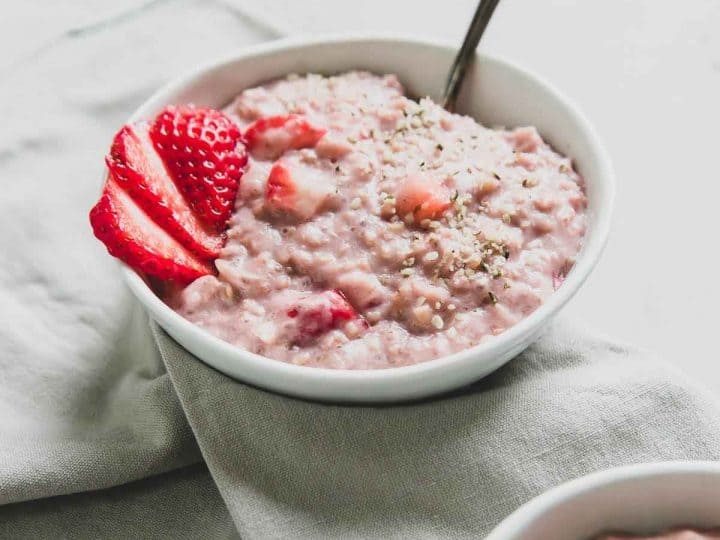

Oatmeal with Strawberries

strawberry oatmeal is definitely healthy. It's also gluten-free (make sure
you're using gluten-free oats) and if you use a milk alternative, it can
easily be made dairy free as well.
Ingredients used
- 50g Quaker Oats
- 250ml milk
- 1 cup Strawberries
Steps
- Pour 250ml of skim milk into a bowl
- Add 50gms of oats
- microwave it for 2 minutes
- Serve it with a cup of strawberries
Home